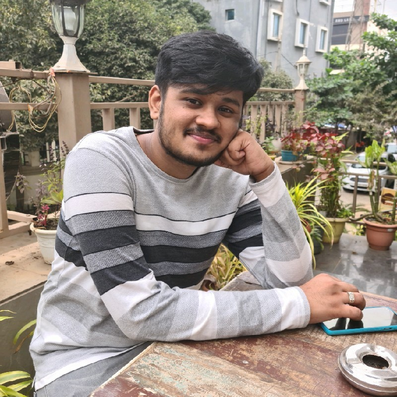

|  |
National Institute of Science Education and Research Bhubaneswar P.O. Jatni, Khurda 752050, Odisha, India Email: kalingvikram [dot] singh [at] outlook [dot] com |
I am a masters student at NISER, currently in 4th year of my course. I am doing my majors in Physics along with a minor in computer sciences. I have a keen interest in material sciences at nano scales and also love to study fluid dynamics and chaos. I also love studying computer sciences and have knowledge of coding in python, AI and ML
I do research on nano materials and I pretty much love it.
Here is my updated Curriculum Vitae.
Research Projects
Conferences and Workshops
last modified: June, 2023